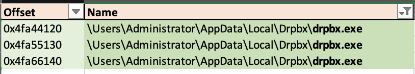
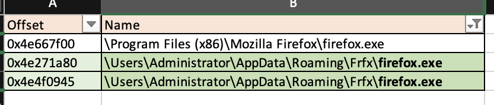
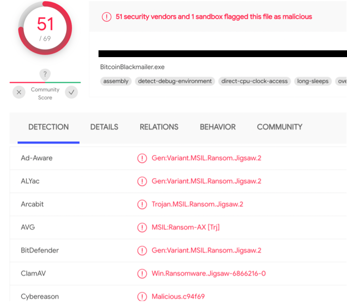
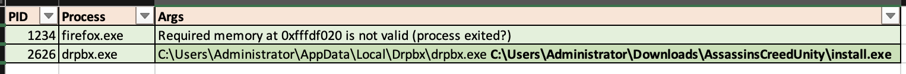
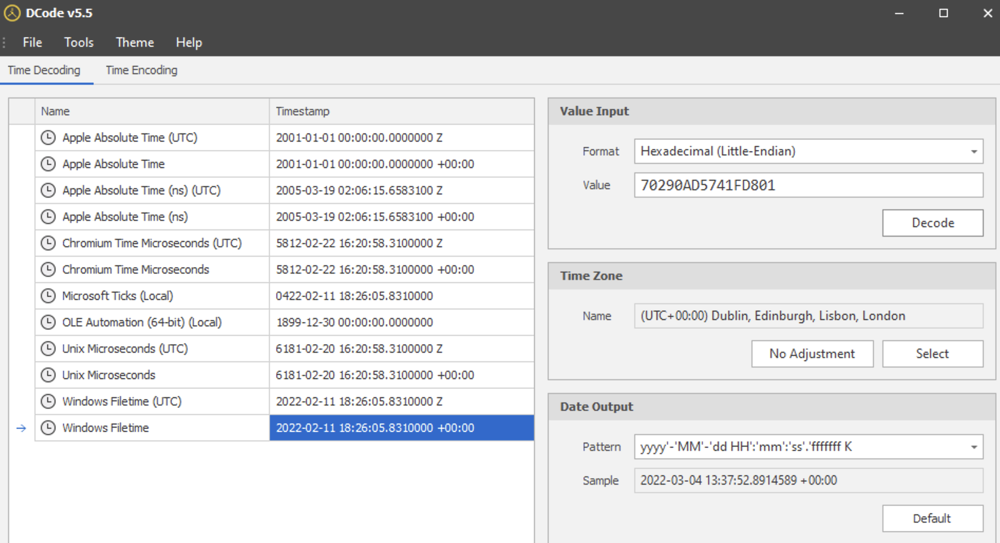
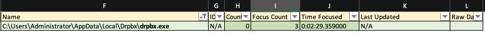
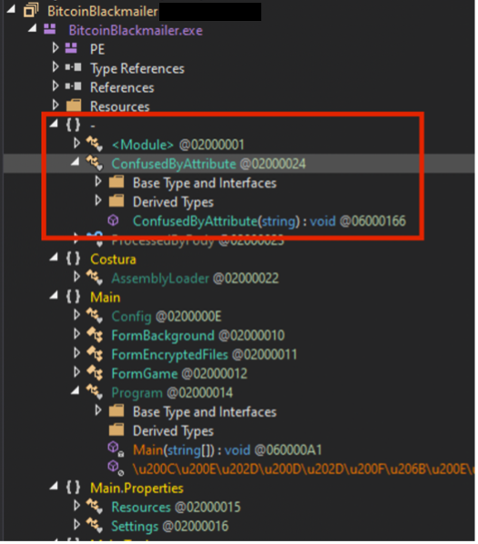
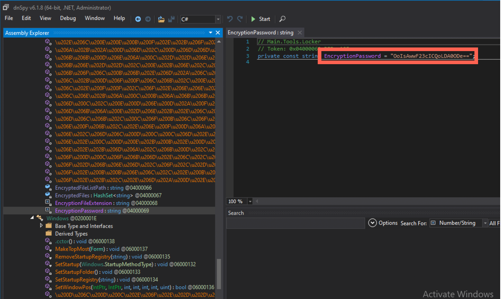
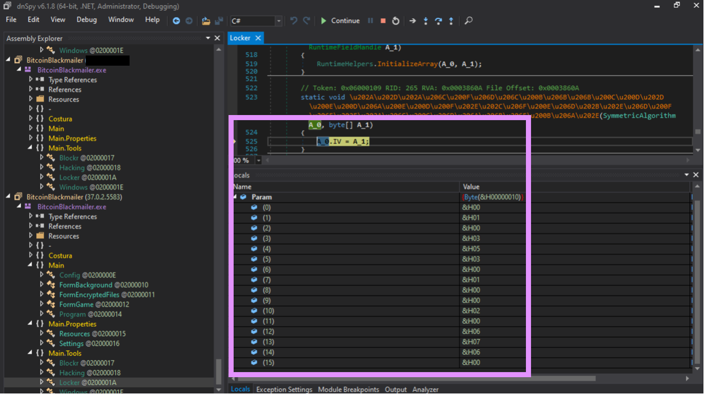

One sunny 😎 day I came to a coworking office very early in the morning. As usual, I’ve decided to kick it off with a freshly brewed coffee which we never had, so, I had to go with an instant substitute. Ugh 😣! I was hoping to savour my disgust meditating over the Feedly recents, when I noticed that I was not the only lark that day. Mark, a freelance designer who happened to be a huge fan of Assassin’s Creed games (just like me), was sitting in the corner of the shared kitchen with his laptop, looking so gloomy that I was sorry I didn’t take my ☔️ with me. When I’ve forced the last sip of that potion inside, I wished him good morning and headed to my working nest. He didn’t respond though, which was weird, since he usually was very friendly. I thought he needed some time on his own and was about to leave the kitchen when suddenly he hailed me. Long story short, he seemed to get himself a virus and didn’t know how to get rid of it. He seemed scared, since lots of important files were encrypted.
I was prettry sure that a ransomware was in place and after checking the file system of my poor fellow and seeing lots of files with a peculiar .fun extension, I’ve become sure of it.
🧰 Toolkit
Windows 11 Parallels VM installed on a MacBook Pro.
RAM Acquisition: WinDD.exe (tried using Dumpit.exe, due to a small footprint, but didn’t work on a Win11 machine).
Memory analysis: volalitility 3 and Excel to open csv and filter the vol3 output produced by other utilities)
Other: DCode v5.5 (for registry timestamps translation), CQEVTXRecovery for Event Logs repair, chainsaw 1.1.5 for Event Logs automated analysis, Event Viewer to view repaired Event Logs, Eric Zimmerman’s tools (MFTCmd).
Reverse Engineering: dnspy 6.1.8 (x64).
🔎 Investigation
📅 11/02/2022
⏰ 7:05 AM
A quick google search suggested that these files might have been encrypted with a childish ransomware Jigsaw 🪚.
⚠️ However, according to the same very search, I was supposed to see a banner that would show some address and the amount wanted, which I didn’t.
I’ve decided to go with a RAM analysis since I was not sure about full functionality of the malware and what impact any of my manipulations could have caused on a live system. What if it starts deleting files when you try attaching a debugger?
So, I started WinDD.exe from a USB drive, saving the file as poormark.dmp. As a good diligent forensicator, I immediately calculated MD5 and SHA256 hash values to put them into a report.
So, the first thing I usually do and am going to do now is running a vol3 netscan pluging to see all open connections. Sometimes it’s the quickest way to spot that something is not right, since there is not that wealth of info unlike with other plugins’ output (using this and this cheat sheets).
python39 # activating python39 with a alias for pyenv
vol3 -f poormark.dmp windows.netscan.NetScan > netscan.csv
Since I already know I will need the output for several other commands, it’s better to do so now.
vol3 -f poormark.dmp windows.pslist.PsList > pslist.csv
vol3 -f poormark.dmp windows.psscan.PsScan > psscan.csv
vol3 -f poormark.dmp windows.pstree.PsTree > pstree.csv
vol3 -f poormark.dmp windows.cmdline > cmdline.csv
vol3 -f poormark.dmp windows.filescan.FileScan > filescan.csv
vol3 -f poormark.dmp windows.malfind.Malfind > malfind.txt
Now, I am going to import this data to an Excel workbook, a sheet for each output (File -> Import -> CSV file, space as a delimiter). Now, I can add filters to each, delete blank rows and start working.
Sip, sip ☕️ … .

That’s ok… . The sooner I finish, the sooner I can get myself a treat.
As suggested my Michael Leclair from the SDF series (Udemy) and his podcasts, I’ve started from looking for any deviations from the normal bahaviour of Windows core process (child-parent, boot time, singleton or not etc).
✍️ I was using my own article about that based on the mentioned resources. I’ve tried to organise all of this data for convenience and it turned out to be not that convenient in the real life, so I will be working on that.
Well. Nothing from that angle. But it was a valid shot. Need another sip of that repellent coffee ☕️.
⏰ 7:20 AM
Hm. The motivation to get myself a sip of better liquid (any liquid would be better, I guess) seemed to make a better impact on my deduction powers.
I’ve spotted two unusual processes: firefox.exe (PID 1234) and drpbx.exe (PID 2626). Both processes were orphaned though they usually have explorer.exe (PID 1377) as a parent. They were spawned by different parents though: firefox PPID 1580 and drpbx 2123. Firefox.exe started today at 06:25:20 and drpbx.exe roughly a minute afterwards at 06:26:22. The strange thing is that they are orphaned i.e. don’t have a parent in the process tree. In case of these two particular executables (it is if they both are legitimate) they should have been started by explorer.exe, a Zeus in the realm of Windows user processes 😃. Hm, curiouser and curiouser 🤔.
Sip, sip ☕️ 🤢… .
Since pslist plugin uses a doubly linked list of processes pointed by PsActiveProcessHead, the information produced is identical to that shown by Task Manager, Process Explorer or alike. psscan, on the other hand, uses another technique and can sometimes be used to retrieve unlinked, hidden processes. Let’s try this one instead, compare the results and see, may be either 1580 or 2123 are still there… .
⏰ 7:22 AM
Nope. Neither. Hm, let’s compare the output of the pslist and psscan. Should probably write a bash script for that tedious task.
⏰ 7:30 AM
Sip, sip, sip ☕️ 🤢🤢… .
Nope again. Sad.
The absence of parent processes is not the only suspicious thing about both of these executables. malfind plugin also returned several alerts ⚠️. So, it’s worth diving deeper. I wonder…
Sip, sip, sip ☕️ 🤢🤢… .
Hm. I am looking at the filescan output and I like these firefox.exe and drpbx.exe even less… . Why do they have such unusual paths? Is it ok for these guys? Besides, there is another firefox.exe on this system with a more conventional path.
drpbx.exe itself is named unusually for a legitimate software. Come on! drpbx.exe? What’s it, like, a Czech 🇨🇿 software? Also, it is stored in the same location and using alike name as this weirdo firefox.exe.


⏰ 7:40 AM
Ok, that’s it. Enough of this peeking and stalking. That’s get my hands on this sample at get it thoroughly examined. I know its PID and I can try dumping it with the dumpfiles plugin.
vol3 -f poormark.dmp windows.dumpfiles.DumpFiles --pid 1234
Cool! Let’s get now the second fellow!
⏰ 7:41 AM
Oops. This one doesn’t give up that easily. However, I could try dumping it using the offsets that I got from the filescan.
vol3 -f poormark.dmp windows.dumpfiles.DumpFiles --physaddr 0xxxxxxx
It worked 🧟♂️🧪! It’s now time to upload them both to a VirusTotal then.
⏰ 7:45 AM
It looks like these are both the same thing and that thing is not nice. Going by the name BitcoinBlackmailer.exe or Jigsaw Ransomware, it might be spooky, but not that desctructive as it may seem. Looks like it’s a .NET malware (meaning, it can be decompiled into something more friendly than hardcore Assembly) and moreover looks like the data needed for decryption is contained in that executable. Wow. Piece of cake? Or a trap… ?

⏰ 7:46 AM
Ok, let’s see what else I can dig, this time from the cmdline output. Hm. Looks like drpbx.exe was launched by another executable, some install.exe.

Fine, that’s dump this one as well and get it scanned by VT.
⏰ 7:47 AM
What the heck? This one is yet another instance of the same crap. Looks like I am getting to the point when reverse engineering is unavoidable.
Well, how about approaching this from another end? Grepping and stuff. What if I check, what clues can I get from the AssassinsCreedUnity keyword’s surroundings in RAM.
strings poormark.dmp | grep "AssassinsCreedUnity" -C2
...
\Hfref\Nqzvavfgengbe\NccQngn\Ybpny\Qecok\qecok.rkr
C:\Users\Administrator\Downloads\AssassinsCreedUnity\install.exe
URLDownloadToCacheFileW
Aha! Gotcha! Wait, what? Official Windows API docs give a little insight as to what this function is used for. Looks like this one is responsible for automatically saving the files on the system and showing that pop-up Open when it’s done, in IE. Good, looks like Mark was digging his own grave with his own hands 🙌. Looks like Mark wanted to save some money on AssassinsCreed Edition… . Ay Ay Ay! Since the Downloads folder contained this malware, it could be great proof of knowledge and intentional download of the file. However, that wouldn’t prove that the user knew about the true functionality of the executable.
But wait, there is also something pretty weird above this AssassinsCreedUnity keyword. Some string, that looks pretty much like a ROT13 encoded path. Let’s see, what it really is (using Cryptii for that):
\Hfref\Nqzvavfgengbe\NccQngn\Ybpny\Qecok\qecok.rkr
# turns into, wait for it... .
\Users\Administrator\AppData\Local\Drpbx\drpbx.exe
Why is it ROT13 encoded then? Well, it might be a UserAssist key, since the paths are indeed ROT13 encoded when written there. Ok, may be I will find other clues using the save technique, but a different keyword:
strings poormark.dmp | grep "qecok.rkr" -C2
...
\Hfref\Nqzvavfgengbe\NccQngn\Ebnzvat\Sesk\sversbk.rkr
\Hfref\Nqzvavfgengbe\Qbjaybnqf\NffnffvafPerrqHavgl\vafgnyy.rkr
...
Voilà! Something again.
\Hfref\Nqzvavfgengbe\NccQngn\Ebnzvat\Sesk\sversbk.rkr
\Users\Administrator\Downloads\AssassinsCreedUnity
# turns into, wait for it... .
\Users\Administrator\AppData\Roaming\Frfx\firefox.exe
\Hfref\Nqzvavfgengbe\Qbjaybnqf\NffnffvafPerrqHavgl\vafgnyy.rkr
So, now I know that all the three malicious executables are likely present in UserAssist registry key. So, that’s where I think I am going to go next. Since registry is hanging out in RAM while the PC is running, being updated constantly, there is an option to dump the whole hive (failed doing so) or just dump specific keys using windows.registry.printkey.PrintKey or plugins specific to the key (windows.registry.printkey.PrintKey).
⏰ 7:54 AM
So, let’s see, what’s inside this UserAssist… .
vol3 -f poormark.dmp windows.registry.userassist.UserAssist
...
\Hfref\Nqzvavfgengbe\Qbjaybnqf\NffnffvafPerrqHavgl\vafgnyy.rkr
"
00 00 00 00 01 00 00 00 ........
00 00 00 00 00 00 00 00 ........
00 00 80 bf 00 00 80 bf ........
00 00 80 bf 00 00 80 bf ........
00 00 80 bf 00 00 80 bf ........
00 00 80 bf 00 00 80 bf ........
00 00 80 bf 00 00 80 bf ........
ff ff ff ff 70 29 0A D5 .....,^`
74 1F d8 01 00 00 00 00 ........" False
Aha! So, there is this install.exe there. At the end of this hex digits row there is a timestamp. I will use DCode utility to convert little-endian hex 70290AD5741FD801 into Windows filetime UTC.

What I can conlude by now is that this install.exe was launhed via its executable (not a shortcut). It was run a minute after firefox.exe and almost instantly followed by drpbx.exe which might suggest that it was this mysterious parent of drpbx.exe. Right after giving birth 🤰 to this clone of its, this install.exe exited leaving the “baby” on its own.
01 00 at offset 0x4 tells me that this program was run once (ref). However, the focus count is 0 and time focused is 0:00:00.500000 (userassist plugin converts this data from hex for readability). Looks like the user didn’t spend too much time looking at at 👀.
Focus time is the time the user spends looking at the windows on his desktop. Not neccessarilly really focusing… . So, the program needs to have GUI for that, and there must be switching between windows as well. As soon as the window gets activated, clicked on, the focus count is incremented.
UserAssist key for drpbx.exe, however, lacks the timestamp. Why? Also, userassist plugin is showing 3 focus count and 0:02:29 total time focused. Looks like install.exe quit almoust instantly and drpbox has been hanging there for a while. Besides, since the focus cound is 3, it’s likely that Mark has seen the window. In other cases that could be a great proof of intent, but here I already know that he has just made a foolish mistake.

Besides, if I add the results of pslist to this data, it seems that there have been just a few seconds between running the install.exe and drpbx.exe. It would be hard to do so manually.
Since there is no install.exe currently running and drpbx is orphaned, my assumption is that install.exe might have spawned drpbx.
⏰ 8:04 AM
I can see Event logs in RAM as well. Let’s try dumping them using filescan plugin with the offset again. May be something of interest will be there.
⏰ 8:04 AM
Ok, I’ve managed to restore some of Event Logs using CQEVTXRecovery.exe, and run chainsaw utility against it hoping to spot anything suspicious.
chainsaw hunt . --mapping /Users/user/Documents/toolkit/win/chainsaw/mapping_files/sigma-mapping.yml --rules /Users/user/Documents/toolkit/win/chainsaw/sigma_rules/ --csv result.csv
CQEVTXRecovery.exe -in pathwithlogs -out pathforresult
However, nothing was found this way.
Ok, I an as well open them with Event Viewer on a Windows VM and review manually (luckily, not to many records there). Or am I just not good enough in manually scrolling through these logs?

⏰ 8:24 AM
As I thought, there is no helpful clue there as well. Alas! So, I think, it’s time to get hands dirty with a little reverse engineering. I am going to open each of these three executables in dnspy tool for .NET RE and see, whether these are indeed the same thing.
Hm. The first thing I notice is that it’s not that trivial. Might cause even more headache than this instant coffee (I think my husband would like to divorce me if he found out I call this potion coffee). But since he doesn’t read my blog, I don’t think it’s going to happen.
I see a ConfusedByAttribute which I used to see many times before and even dedicated a blog post about it.

Static deobfuscation is time consuming, thus I am not doing it. Instead, I am going to make use of Set Next Instruction functionality of dnspy heavily used to control the program flow. Think of it as changing the value of EIP register, i.e. I can choose the next line to be executed within one function though. So, I am focusing on if-statements.
This malware indeed has the key inside the binary… . Not wise, dude. And also thank you for naming it so unconfusingly as well, EncryptionPassword. Belissimo! Going by the way it looks, it’s likely encoded with Base64.

Ok, but what type of encryption is this malware using? Hm… I see this SymmetricAlgorithm function. Great, but which one? Need some time to inspect the code which is not yet obfuscated.
⏰ 8:30 AM
Hm, lucky me, SymmetricAlgorithm in .NET is by default AES, CBC mode. So, apart from the EncryptionPassword I need a IV (initialization vector).
🤞I promise, I will write an article about block ciphers some time in future!
But I have not seen this IV or anything that would like it. Nothing. Hm. Let me check again.
⏰ 8:34 AM
No, there is not yet. .NET confuser deobfuscates its code one piece at a time. So, in order to get the IV, I will have to start debugging. Ok. That’s start. What the heeeeeel?! It seems that the executable just gets detached and is running happily in RAM anyway. What am I doing wrong?

⏰ 10:34 AM
Ok… I am utterly angry 😡. Several hours spent trying to figure out the reason for this happening and guess what? I even thought that this might be due to the fact that I am running it on a Windows 11 machine.
I opened some Output window. I wondered what would be shown there. And I saw something like “Cannot make an anti-debugging patch because the executable is not using it”. Really?! If it’s not using it, DON’T TRY PATCHING IT!!!
Ok, at least I have found this IV along the way.

⏰ 10:44 AM
Ok, but what really happens? Why there are three identical files? I am launching the executable without a debugger and let’s see what’s going to happen. I will execute install.exe.
Ha! As I have suspected, install.exe spawns drpbx.exe and exits. But where is the firefox?
⏰ 10:46 AM
Well, debugging shows a part of code that seems to be all about that… . Eurika! I think, now I know, what has happened.
Ok, but what is the impact on the system after this malware has finished its naughty mission? Malware likes making use of common Windows persistance mechanisms. The most common is Run and RunOnce registry keys (specific to the user of system wide). Another common technique is to copy itself to the Startup folder. The path might differ from system to system. For Windows 11 these are C:\Users\Username\AppData\Roaming\Microsoft\Windows\Start Menu\Programs\Startup and C:\ProgramData\Microsoft\Windows\Start Menu\Programs\StartUp.
-
install,drpbx.exeandfirefox.exeare all different instances of the same code that copies itself to persist on the system. -
When
installis launched, it copies itself to\Users\Administrator\AppData\Local\Drpbx\asdrpbx.exe, spawnsdrpbx.exeprocess and then quits, leaving the process orphaned. Then, depending on the settings, it might wait until the system reboots. This was the case here. -
While still active the malware sets either the registry startup entry mentioned above or copies itself to either of the startup locations. In this case the registry key option was used.
-
After reboot the instance that persisted through the registry is launched. This instance encrypts documents producing files with .fun extension.
However, one question remains: why both firefox.exe and drpbx.exe were found in memory? install.exe spawns drpbx.exe only, firefox.exe is started after the system reboots and RAM is cleared after reboot since it’s volatile. Besides, judging by the timestamps in pslist, firefox.exe was launched before drpbx.exe which should not have happened.
One of the most likely scenarios is that Mark first launched install.exe in attempt to install a game (going by the name of the folder install.exe was downloaded to). However, no game seemed to be installed and Mark tried rebooting the PC.
However, this didn’t work as well, and he tried executing the install.exe again. Only then he noticed that something went wrong. That can explain both firefox.exe and drpbx.exe hanging in RAM, drpbx.exe executing *after* firefox.exe. This might be a hint that the user didn’t know about the true functionality of the malware.
Great, now I have everything in my disposal to help the friend of mine to derypt his valuable files. Hey, Mark!
⏰ 10:50 AM
I’ve given Mark several recommendation on how to remove the malware and get the PC cleaned afterwards. Below are these recommendations. By the ❓ OPTIONAL keyword I’ve marked those recommendations that were not needed here, but could have been given in a real case when I don’t know the user myself:
-
✍️ Kill all of the following processes if they are still running on the system:
install.exe,drpbx.exe,firefox.exe. -
✍️ Delete the files from the following locations:
\Users\Administrator\AppData\Roaming\Frfx\firefox.exe\Users\Administrator\AppData\Local\Drpbx\drpbx.exe\Users\Administrator\Downloads\AssassinsCreedUnity\install.exeC:\ProgramData\Microsoft\Windows\Start Menu\Programs\StartUp\firefox.exefor Win11C:\Users\Username\AppData\Roaming\Microsoft\Windows\Start Menu\Programs\Startup\firefox.exefor Win11
-
✍️ Clean the following registry key 🔑 :
SOFTWARE/Microsoft/Windows/CurrentVersion/Run, if\Users\Administrator\AppData\Roaming\Frfx\firefox.exeis written there. -
✍️ Use the python 🐍 script below to get your files back the files.
-
❓OPTIONAL. In case I didn’t have any context and didn’t know Mark as well, I would suggest collecting other triage data from the system to make sure, that the malware was not spread through the network within the infrastructure and also to conduct additional investigation as to user intent and knowledge (Kansa, KAPE or other tools might be used for collection). The most relevant artefacts in this case would be the following:
-
Eml, pst, ost files (in case malware was spread over email), however, I do have pretty strong evidence that it was downloaded via browser.
-
Evtx files (to find the URL the malware was likely downloaded from and possibly other malware as well or hacking activity, lateral movement if any etc)
-
Registry hives (to further prove intent or innocence, if needed).
-
Firefox, IE and Chrome browser history (in case the malware was downloaded using browser, which is the most likely scenario).
-
-
❓OPTIONAL. If it is confirmed that the user didn’t know about the true functionality of the malware, then the policy of the company and controls in place need to be reviewed as to what users are allowed to download and install what software.
-
❓OPTIONAL. Also, employee security awareness training need to be regularly held, educating them on cybersecurity risks and threats.
I’ve also recommended him to buy the Unity edition, it’s totally worth it anyway! And if he is risking online that carelessly, at least, use another user account, or even better, another PC.
If I didn’t know Mark in person, I would probably try finding this link he used. For example, using regex or scrolling through the Event Logs.
strings poormark.dmp | grep -Eo "(http|https)://[a-zA-Z0-9./?=_-]*" | sort -u > links.txt
⏰ 11:50 AM
The victory tastes almoust dizzyingly sweet.
PS. It took much less time to google the IV instead of manually reversing the file to get it. However, I just felt utterly uncomfortable not knowing why I cannot attach the debugger and not being able to get this IV myself.
PPS. By the way, below is my pythong script for decrypting using the above mentioned key 🔑 and IV.
# activate python39 env if you are using pyen or virtualenv
python39
pip install pycryptodome
from Crypto.Cipher import AES
from Crypto.Util.Padding import pad, unpad
import base64
key=base64.b64decode("OoIsAwwF23cICQoLDA0ODe==")
flag=open("/path/to/important/file.fun", "rb")
flag_file=flag.read()
iv=b'0103530100206760'
cipher = AES.new(key, AES.MODE_CBC, iv=iv)
original_data = unpad(cipher.decrypt(flag_file), AES.block_size)
print(original_data)